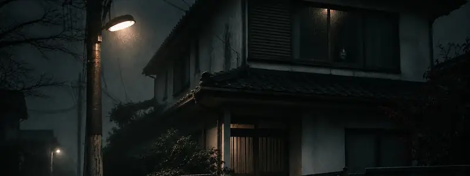
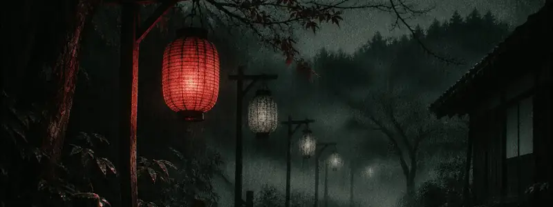
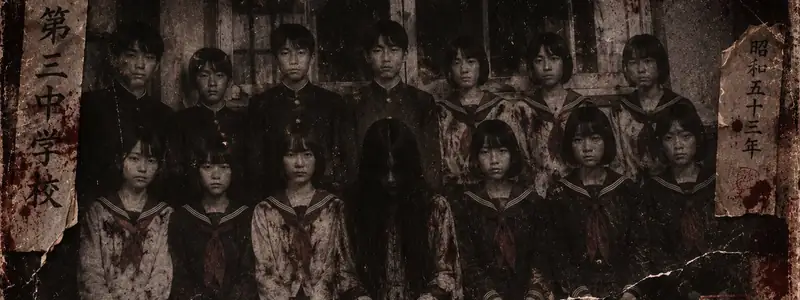
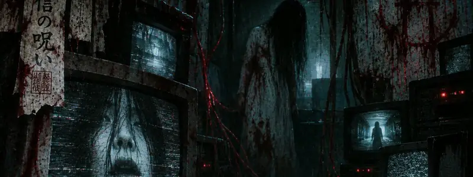
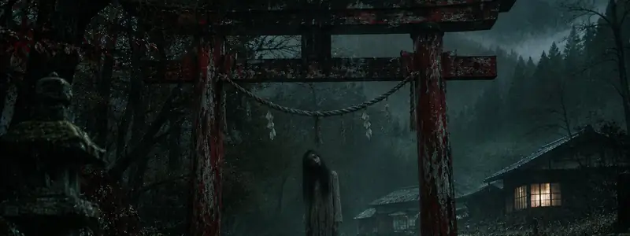
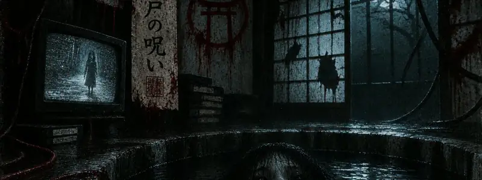
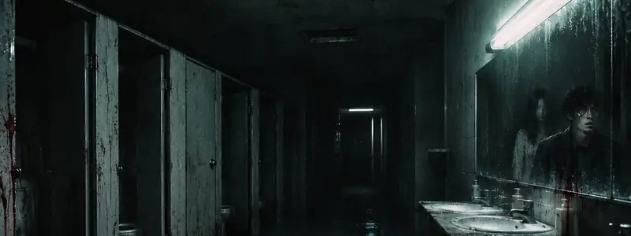
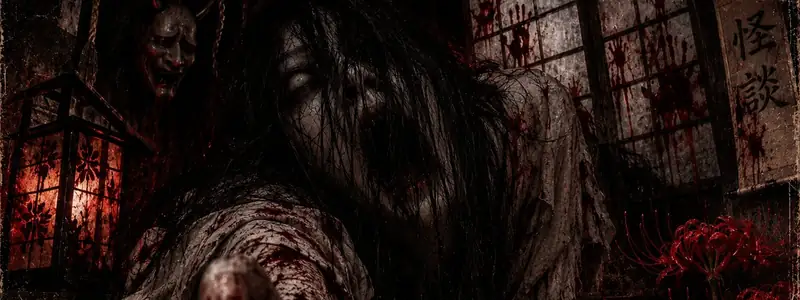
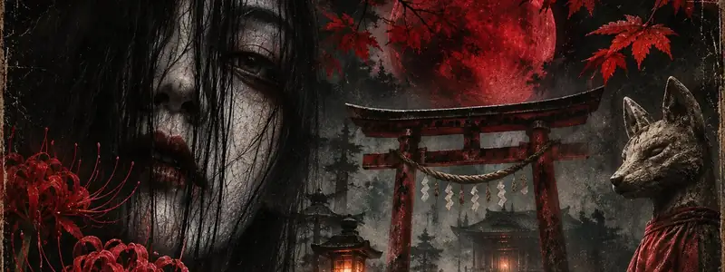

РазделSection
Подборки по темамCollections
Фильмы из архива, собранные по темам: дома, леса, плёнки, зеркала, вода.Films from the archive gathered by theme: houses, forests, tapes, mirrors, water.
- 家 · 40Проклятые домаHaunted housesСтены, которые помнят. Дома, отели, приюты и квартиры, где что-то осталось.Walls that remember. Houses, hotels, asylums and apartments where something stayed behind.

- 呪 · 20Проклятые вещиCursed objectsКассета, кукла, маска, книга. Вещи, которые не стоило брать в руки.A tape, a doll, a mask, a book. Things that should never have been picked up.

- 森 · 23Леса и глушьForests and wildernessХижины, болота, горы и леса, которые отвечают.Cabins, swamps, mountains and woods that answer back.

- 子 · 40Дети и призракиChildren and ghostsМаленькие руки, школьные коридоры и ребёнок, который в комнате не один.Small hands, school corridors and the child who is not alone in the room.

- 画 · 34Экраны, плёнки и камерыScreens, tapes and camerasТелевизоры, VHS, найденные плёнки и телефоны: ужас, который приходит через экран.Televisions, VHS, found footage and phones: the horror that arrives through a screen.

- 村 · 31Фолк-хоррорFolk horrorДеревни, культы, праздники и древние обряды. У земли свои правила.Villages, cults, festivals and old rites. The land has rules.

- 水 · 23Вода и глубинаWater and depthОзёра, колодцы, океаны, затопленные комнаты. Под поверхностью что-то есть.Lakes, wells, oceans, flooded rooms. Something is under the surface.

- 鏡 · 9Зеркала и двойникиMirrors and doublesОтражения, близнецы и «я», которое не совсем твоё.Reflections, twins and the self that is not quite yours.

- 憑 · 27Одержимость и экзорцизмPossession and exorcismДемоны, священники, монахини и долгая ночь души.Demons, priests, nuns and the long night of the soul.

- 日本 · 40Японский хоррорJ-Horror and JapanМстительные призраки, городские проклятия и длинные чёрные волосы в коридоре.Vengeful ghosts, urban curses and the long black hair in the corridor.
